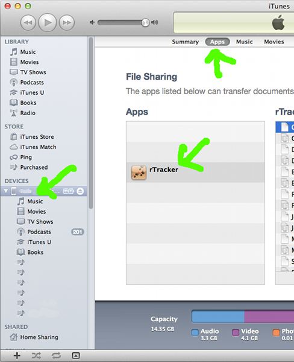
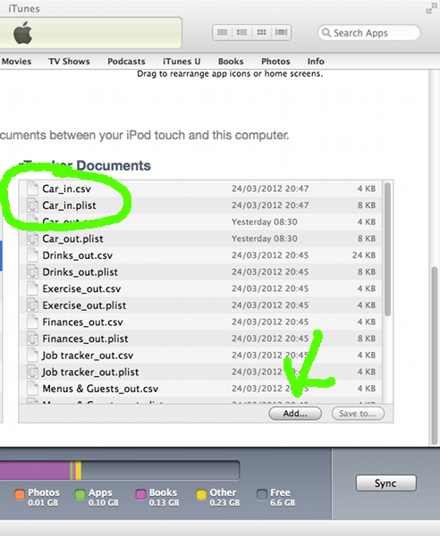

Importing trackersAs of version 1.0.10, rTracker supports .rtrk format files. These will be recognised by iOS devices with rTracker installed, inSadly with the change to hosting these webpages on GitHub rather than the Realidata, Ltd. server, it is no longer possible to download from Safari directly to rTracker on your iOS device. Thus the easiest way to import a tracker from Realidata, Ltd is to save the .rtrk file and email it to your iOS device, or use the iTunes installation procedure below to copy it to your device. rTracker exported tracker definitions are stored separately from tracker data, in '.plist' files. This might be from an archived tracker exported with its data in the past, or might be a tracker supplied by someone else. An exported tracker
definition file will be called '<tracker name>_out.plist'.
To change this to a file for import, rename it to '<tracker
name>_in.plist'.
|
Get rTracker and use all these sample trackers: |
Importing dataTo import tracker data, you will be starting with a Comma Separated Value (.csv) file containing the data of interest. The column headings in this file will match the value names for your tracker, and there will be one row for each timepoint. The easiest way to get the correct format is to start with an exported .csv file for your tracker, and edit that file as desired.Data for timepoints which exactly match entries already stored in rTracker will overwrite those entries, while new timepoint data will be added. If you need to delete records, use the review or edit functions within rTracker. An exported tracker data file will be called '<tracker name>_out.csv'. To change this to a file for import, rename it to '<tracker name>_in.csv'. As of version 1.1.5, rTracker supports .rtcsv as a file type - so
the easiest way to import .csv
data into tracker is to change the extension to .rtcsv
and email it to your device. The iOS Mail app will offer to
open it in rTracker. The .rtcsv format can read some
tracker configuration data in a special second header line; to
learn about it, enable the 'save as .rtcsv' option in the rTracker
preferences (System Settings -> rTracker) and inspect a saved
.rtcsv file. |
|
Installation - iTunesTo install the files from a computer, start iTunes with your device connected. Select your device, and go to the 'Apps' tab. Scroll to the bottom to see a list of installed Apps which are configured to share files. Select rTracker.Jump to Step 2 |
 |
| The right-hand pane will show a list
of the files in rTracker's documents directory. Click the
'Add...' button to select your files for import. Remember to rename your .plist and .csv files to '<tracker name>_in.csv' or '<tracker name>_in.plist', otherwise they will not be recognized by rTracker for loading. .rtrk files do not have this restriction, so just add them to iTunes. Once they have been installed, the files will be imported and then deleted from the rTracker documents directory the next time the rTracker main screen is displayed. If your files do not import, please note the following:
|
 |